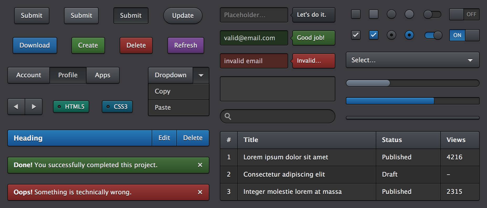
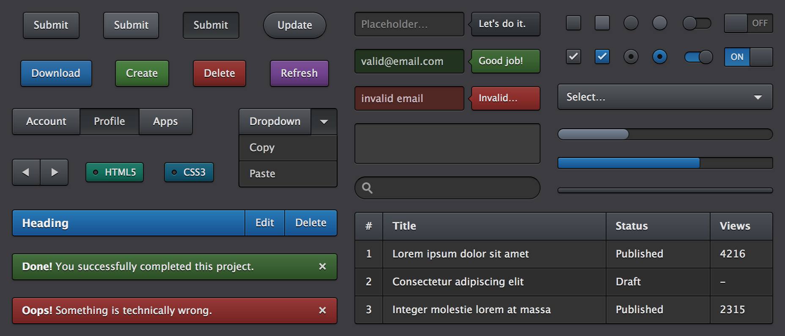

Real World Web Components
Are we ready?
Grüeziwohl!

- I'm Martin
- @g33konaut
- avgp and martin-naumann
- ox86.tumblr.com
- web evangelist
Oh, these slides are online at bit.ly/fec14-webcomponents
(and they're also done in web components)
Please fasten your seatbelts...
- Part 1: A bit of history
- Part 2: Enter web components
- Part 3: Are we there yet?
Part 1: Let's talk about HTML
1991: HTML 1.0
- TITLE
- ISINDEX
- ANCHOR
- ISINDEX
- PLAINTEXT
- LISTING
- P
- H1, H2, ..., H6
- ADDRESS
- UL, MENU, DIR
1993: HTML 2.0
- + Forms
- + Images
- + Head/Body
- + Strict mode
1995: HTML 3.0
A whopping 150 pages of specs
Yet each browser had proprietary extensions
:(
1995: HTML 3.0
A whopping 150 pages of specs
Yet each browser had proprietary extensions
:(
1998: HTML 4.0
A whopping 3 modes of "fun"!
- strict
- transitional
- frameset
1998-2008:
???
Meanwhile on the web...
The web evolved
 => 
=> 
But...
HTML was still primarily built for documents.
RIA, Web 2.0 & SPAs
The web isn't just documents anymore...
How to move forward?
=>
How to move forward?
Extend!
Enough history
Components, now!
Enough history
Well, first of all: A Problem
Example 1: Filterable list
To me that feels like...

Really...?
Is that how we're gonna extend our platform?
But how to unsuck it?
- Keep it a Javascript hack
- Try to implement it directly in the browser's codebases
- Try to get it standardized
But how to unsuck it?
- Keep it a Javascript hack
- Try to implement it directly in the browser's codebases
- Try to get it standardized
But how to unsuck it?
- Keep it a Javascript hack
- Try to implement it directly in the browser's codebases
- Try to get it standardized

What now?
What now?
Building new HTML elements using HTML, CSS & Javascript
Web components =
- Template element
- Shadow DOM
- Custom elements
- HTML imports
See The W3C intro for it, too
Template elements
Shadow DOM
Custom elements
HTML imports
Styling 1: :host-context
Styling 2: ::shadow
Styling 3: /deep/
Dependency management?
vulcanize -o build.html index.html --inline
Part 3
Right... so are we there yet?
When?
Now
When?
Now
When?
Now, sorta.
When?
Now, sorta.
Progress!
Source: are-we-componentized-yet, captured 03.05.14
Progress!
Source: are-we-componentized-yet, captured 25.07.14
Progress-o-rama!
Source: are-we-componentized-yet, captured 28.08.14
Well...
Test yourself!
Caution: The sample size is too low / too biased to draw conclusions yet
Polyfills?
Hat tip to Google!
But...
131.819 kb minified
And need to test carefully, because it obviously has limitations
And the browser support
Another demo...
The Paper components
and a JS Bin
Useful links
Polyfill & frameworks & utils
Try it
Recap
- Web components = reusable, custom HTML elements
- Standards:
- Template elements: Markup for the element
- Shadow DOM: Isolation
- HTML Imports: Linking & reusing components
- Custom Elements: Declaration of your tags
- Supported in most major browsers (IE and Safari are far behind)
- Start giving them a try!